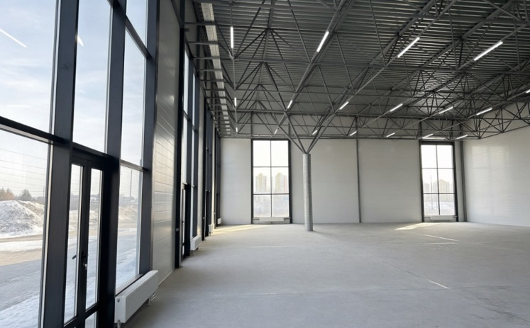
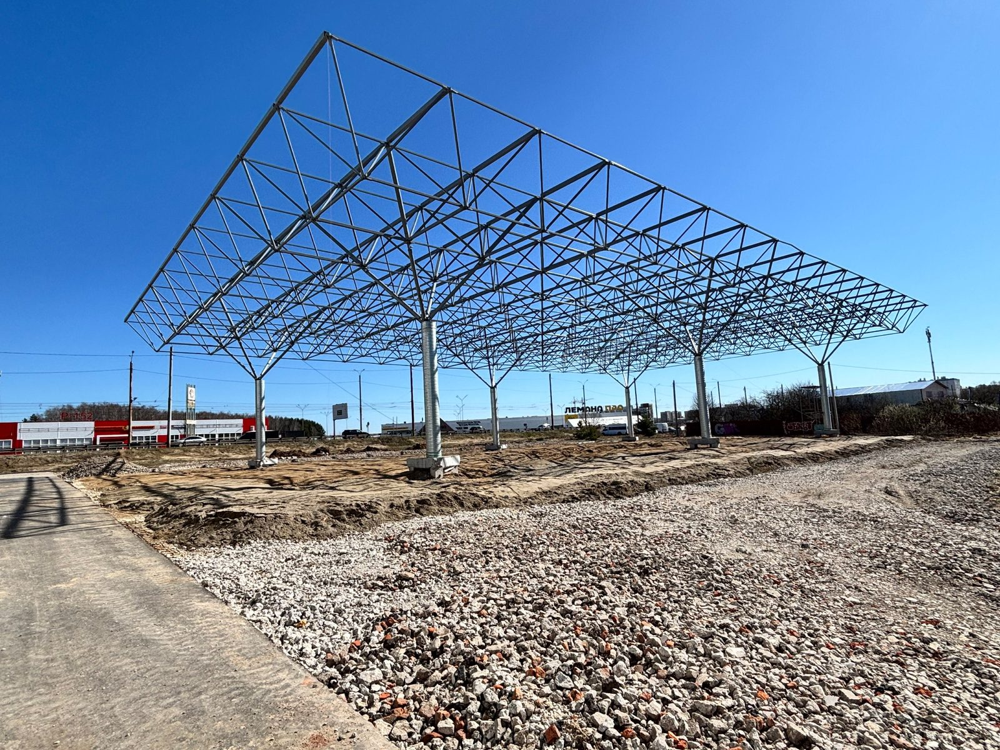
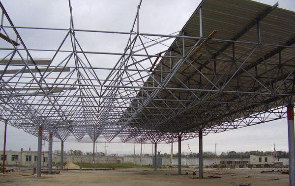
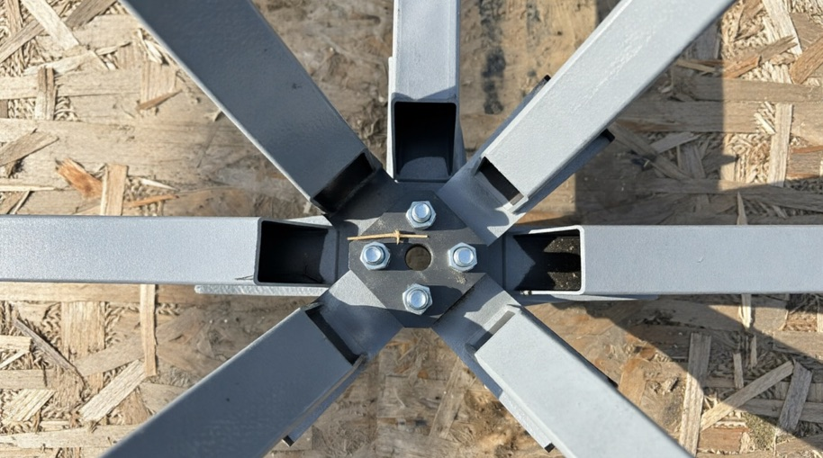
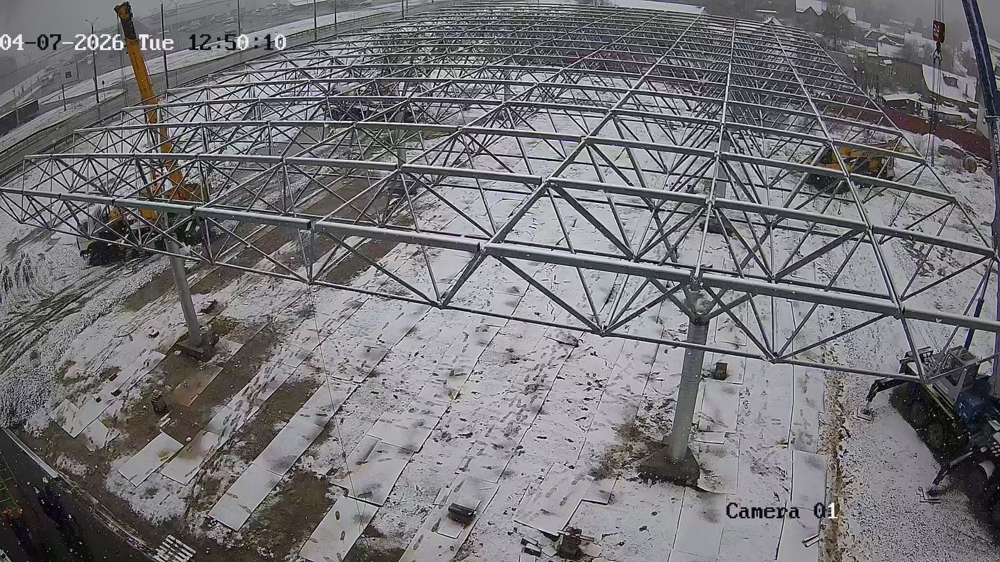
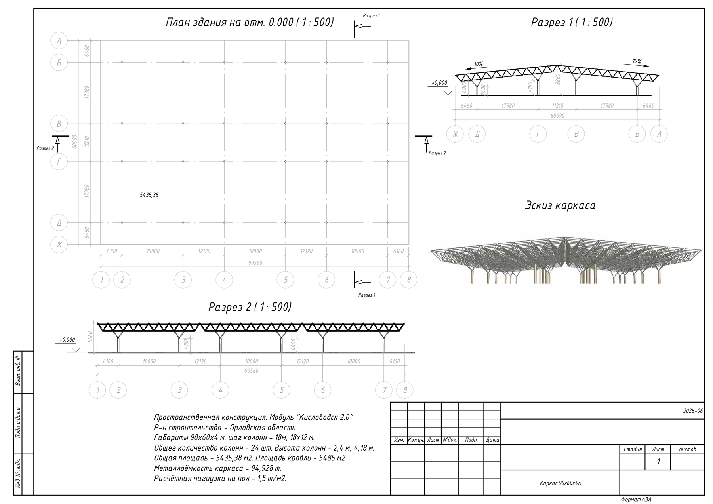
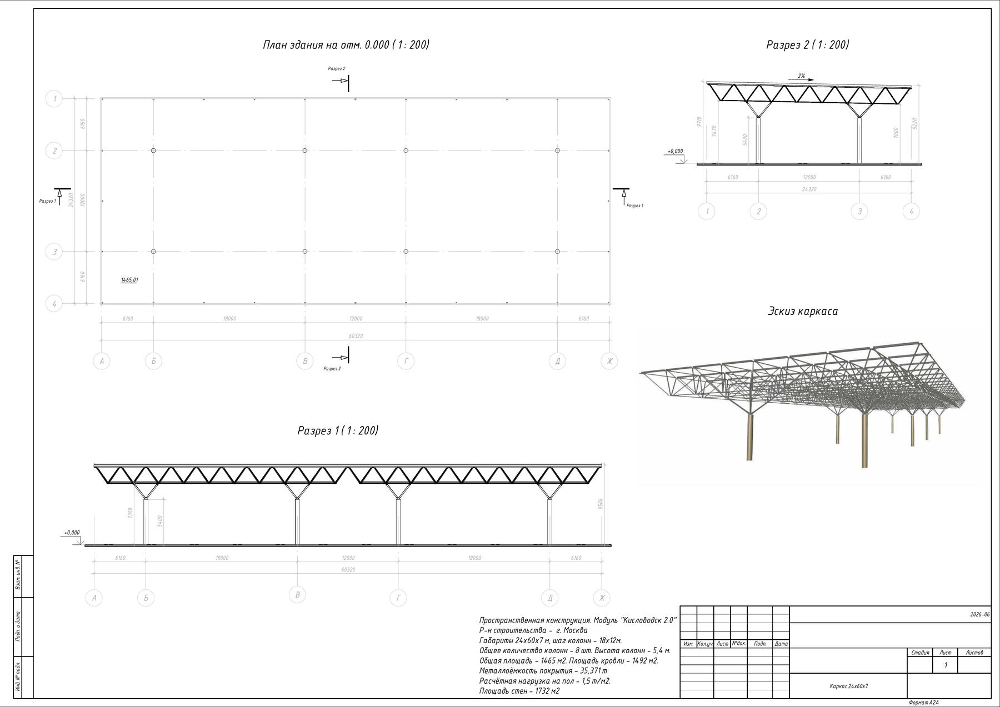
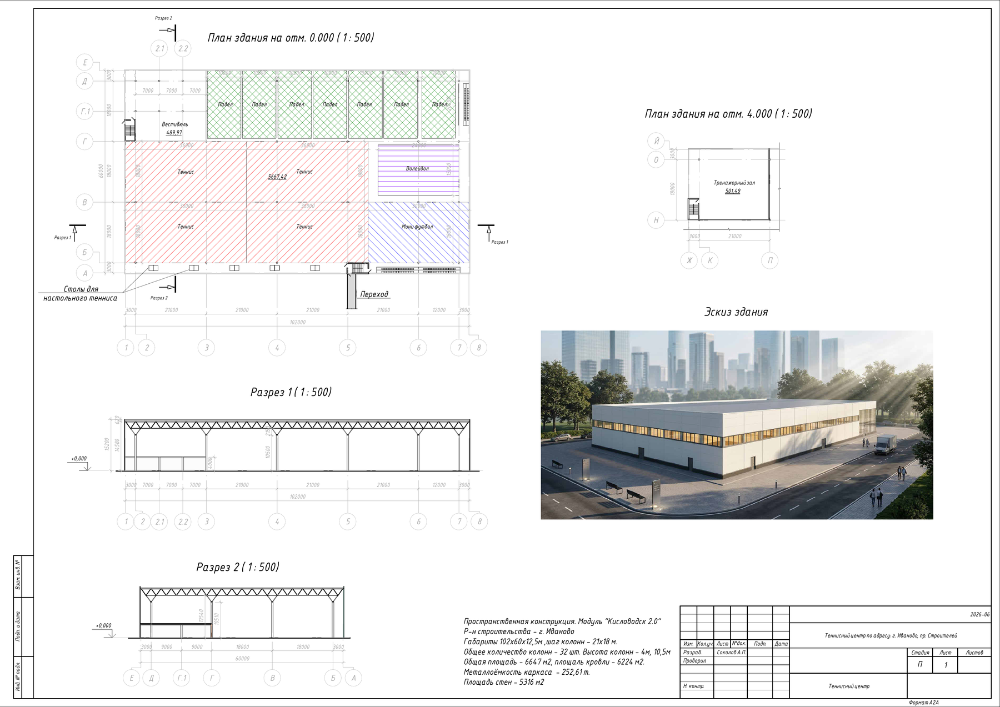
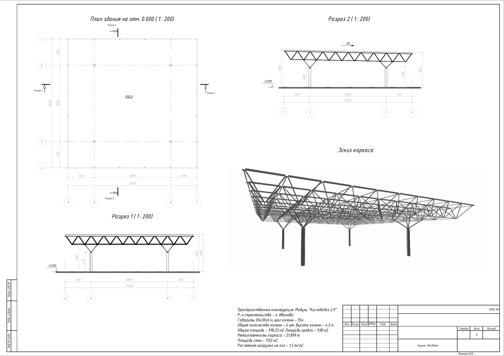
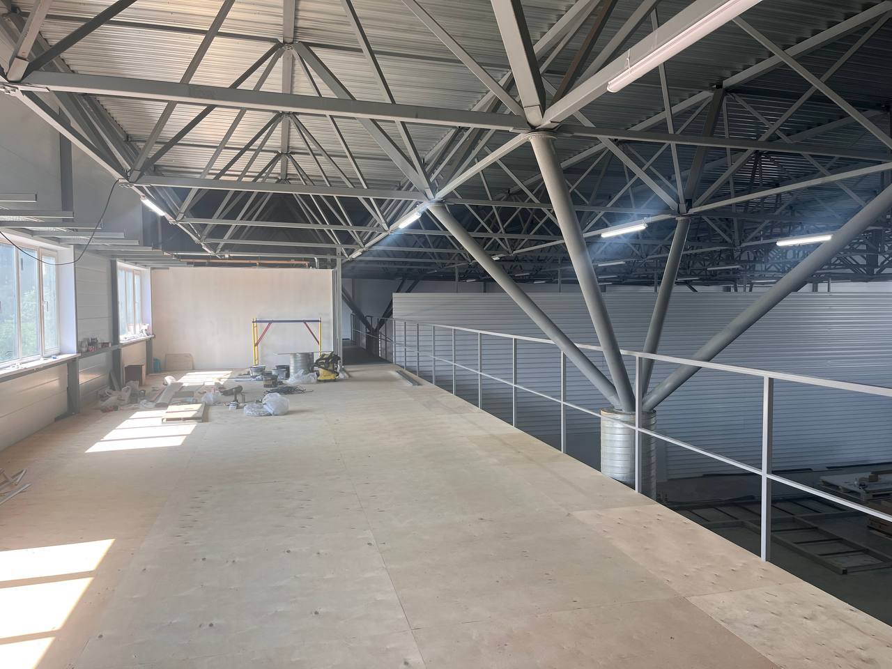

Модуль «Кисловодск 2.0»: характеристики, применение и стоимость за м²
Обновлено 6 августа 2026 · завод металлоконструкций МСГ, Иваново
Кисловодск 2.0 — пространственная перекрёстно-стержневая конструкция покрытия из стальных профильных труб на болтовых соединениях. Это модернизация советской структурной системы 1974 года, адаптированная под современные нормы и заводское производство на станках с ЧПУ.
Ключевые параметры: расход металла 20–23 кг на квадратный метр против 50–80 кг у традиционного каркаса, сетка колонн от 18×18 до 36×24 метров, безопорные пролёты до 24 метров, высота зданий до 20 метров. Расчётная снеговая нагрузка кровли — 280 кг/м².
Каркас с монтажом — от 5 000 ₽/м², здание под ключ с холодным контуром — от 20 000 ₽/м², с тёплым — от 25 000 ₽/м². Сборка каркаса площадью 1 500 м² занимает 6–7 рабочих дней бригадой из четырёх человек.
Производитель — завод МСГ, одно из крупнейших предприятий металлоконструкций Ивановской области, работает с 2002 года.

Объект 1 285 м² в Ивановской области: решётчатое покрытие опирается на редкую сетку колонн
Почему обычный каркас выходит дороже
Разговор с подрядчиком о строительстве цеха или склада почти всегда упирается в перерасход бюджета и сроки. Причина в экономике производства: чем больше тоннаж металлоконструкций, тем выше выручка завода. Проектировщик закладывает тяжёлые фермы, под которые нужны массивный фундамент и частая сетка колонн 6×6 метров. Заказчик платит за металл, который несёт сам себя.
«Кисловодск 2.0» меняет схему работы конструкции, а не толщину сечений. Стержни собираются в перекрёстную решётку и работают в трёх плоскостях сразу: нагрузка не идёт по одной балке, а расходится по всей структуре и уходит в опоры. Отсюда и меньший расход металла, и малое количество колонн.
Зданию площадью 1 440 м² габаритами 30×48 метров достаточно шести колонн. Для сравнения, традиционная сетка 6×6 потребовала бы около сорока стоек.

Смонтированное покрытие до обшивки: вся решётка держится на нескольких опорах, между ними — свободный пролёт
Что такое пространственная перекрёстно-стержневая конструкция
Это система, где несущую функцию выполняет не набор отдельных балок и ферм, а единая пространственная решётка. Она ведёт себя как плита: локальная нагрузка распределяется между множеством стержней, и ни один элемент не работает в одиночку.
Система «Кисловодск» разработана в 1974 году на базе решений МАРХИ — решётка из круглых труб, соединённых литыми шаровыми узлами. Здания этой схемы стоят по стране пятый десяток лет: расчётная модель проверена не рекламой, а эксплуатацией.
Тем не менее в массовое строительство система так и не вошла. Подвела не конструкция, а технология изготовления одной-единственной детали — узла.
Точёный шар с внутренними резьбами дорог в производстве, требует индивидуальной оснастки и не поддаётся автоматизации. Добавьте сюда жёсткие допуски при сборке — и станет понятно, почему строить по этой схеме было невыгодно, хотя сама её логика осталась актуальной.
Эволюция «Кисловодска», а не его повторение
В основе «Кисловодска 2.0» — советская система 1974 года, пересчитанная под современные нормы. Литые шаровые узлы заменены на плоские стальные пластины с болтами, круглая труба — на квадратный профиль.

Литой узел · СССРОригинальная система «Кисловодск», СССРУзел «сэндвич»Кисловодск 2.0 — современный расчёт и узлы
Слева — система первого поколения: круглые трубы и литые шаровые коннекторы. Справа — «Кисловодск 2.0»: квадратный профиль и фланцевый узел из листового проката, себестоимость которого ниже в 3,5 раза.
Чем «Кисловодск 2.0» отличается от системы прошлого поколения
Фланцевый узел вместо литого шара
Точёный шар заменён сборкой из двух стальных пластин с фасонками на высокопрочных болтах. Деталь изготавливается на ЧПУ и повторяется от объекта к объекту. Себестоимость узла ниже в 3,5 раза. Сварки на площадке нет вообще: качество соединения задаётся на заводе, а не квалификацией монтажника и погодой. Контроль сборки — визуальный, по затяжке болтов.
Раскосы под 45 градусов
Геометрия пересчитана под действующие требования к снеговым и ветровым нагрузкам по СП 20.13330.2016. Под углом 45° стержни работают на чистое растяжение и сжатие, без изгибающих моментов — сечение используется эффективнее, чем в балке. Именно это позволяет разносить колонны: типовые сетки — 18×18, 24×24 и 36×24 метра. Это шаги, оптимальные по металлоёмкости, но не единственно возможные: под нестандартную задачу сетка подбирается индивидуально, кратно 3 метрам.
Квадратная труба вместо круглой
Вместо шести типоразмеров круглых труб — стандартные профили сечением 50, 60, 80 и 120 мм. Это массовая номенклатура, она есть на любой металлобазе: ни дефицита, ни долгих согласований. Квадратный профиль даёт одинаковую жёсткость по осям, а плоские грани образуют готовую плоскость для крепления прогонов кровли и стеновых сэндвич-панелей.

Узел системы «Кисловодск 2.0»: сопряжение профильных труб через фланцевые пластины и высокопрочные болты. Сборка без сварки на высоте
Натурные испытания: зимовка под снегом без очистки кровли
Зимой 2025–2026 годов на объекте площадью 1 285 м² в Ивановской области снег с кровли намеренно не убирали весь сезон.
При предельном снеговом покрове прогиб пространственной решётки в центре составил 35 мм — ровно столько, сколько дал проектный расчёт. Расхождение расчёта с фактом — 3%. Конструкция сохранила геометрию и несущую способность.
Это единственная проверка, которую нельзя воспроизвести презентацией: здание либо простояло сезон без очистки, либо нет.

Объект в Ивановской области, зимний сезон. Снеговая нагрузка кровли по расчёту — 280 кг/м²
Технико-экономические показатели
Показатель
Значение
Удельная металлоёмкость
20–23 кг/м² против 50–80 кг/м² у традиционного каркаса
Опоры на здание 30×48 м
6 колонн
Сетка колонн
от 18×18 до 36×24 м, индивидуально — кратно 3 м
Безопорный пролёт
до 24 м
Высота здания
до 20 м
Снеговая нагрузка кровли
280 кг/м²
Полезная нагрузка
20 кг/м²
Нормативное ветровое давление
0,23 кПа
Нагрузка на пол
от 1,5 т/м², считается под задачу
Сборка каркаса 1 500 м²
6–7 рабочих дней, бригада 4 человека
Подъём модуля покрытия
2 часа, 2–4 крана
Изготовление 1 000 м²
5 дней против 15–20 у традиционного каркаса
Транспортировка
1 фура на комплект 30×30 м вместо 3–4
Технология узлов
фланцевые соединения на высокопрочных болтах, без сварки на высоте
Гарантия
5 лет по техническим условиям
Чем отличается от ЛСТК, арочных и тентовых ангаров
Параметр
Кисловодск 2.0
ЛСТК
Арочный
Тентовый
Степень огнестойкости здания
III, класс С0
не проходит пожарный контроль
зависит от конструктива
не нормируется
Ввод в эксплуатацию как капитального объекта
да
нет
ограниченно
нет
Снеговая нагрузка
280 кг/м²
ниже
ниже
требует постоянной очистки
Безопорный пролёт
до 24 м
до 12–15 м
до 24 м, но с потерей высоты у стен
ограничен
Подвесные нагрузки, кран-балки
до 10 т
не предусмотрены
ограниченно
нет
Срок службы конструкции
капитальный
ограничен
средний
сезонный
Принципиальное отличие от ЛСТК. Наше здание получает III степень огнестойкости и класс конструктивной пожарной опасности С0, поэтому его можно ввести в эксплуатацию, поставить на кадастровый учёт, заложить и оформить в лизинг. Конструкции из ЛСТК пожарный контроль не проходят.
Материал колонн: железобетон или сталь
Система не привязывает заказчика к одному материалу. Выбор зависит от задач объекта, грунтов и бюджета.
Железобетонные колонны по системе ФАСТКОН. Монтируются на анкерную группу. При сопоставимой несущей способности обходятся дешевле стальных и, что важнее, закрывают требования пожарной безопасности — огнезащита металла не требуется вовсе. В расчёте по реальному объекту это убрало 1 029 000 ₽ из сметы.
Стальные колонны. Выбирают, когда нужна максимальная скорость монтажа или особые габаритные решения.
Если проект требует именно стальных колонн, огнезащиту наносим на заводе — на площадку приезжают готовые колонны, и обрабатывать их на высоте не нужно. Если по логистике удобнее на объекте, бригада сделает это на месте.
Сертификаты и нормативная база
Все документы действуют до 28.06.2029. Нажмите на миниатюру, чтобы открыть оригинал.
Для зданий высотой 12–15 метров, где норматив требует предела огнестойкости до 60 минут, наносится дополнительная огнезащита — заводская или объектная. Это делает конструкцию пригодной для объектов с массовым пребыванием людей.
Скорость строительства: каркас за 6–7 дней
Проектирование объекту требуется в любом случае, но за счёт типовых узлов и стандартных модулей раздел КМ готовится значительно быстрее обычного.
Изготовление идёт параллельно подготовке площадки. Пока заказчик делает фундамент, каркас производится на заводе. Комплект на 1 000 м² изготавливается за 5 дней против 15–20 у традиционных металлоконструкций.
Сборка на земле. Модуль покрытия собирается на нулевой отметке, без высотных работ. Масса каждого элемента — до 20 кг, детали поднимают руками, соединяют на болтах. Каркас на 1 500 м² бригада из четырёх человек собирает за 6–7 рабочих дней.
Подъём за 2 часа. Готовый пространственный блок поднимают на колонны двумя-четырьмя автокранами. Кран нужен на одну смену, а не на месяц.
Монтаж стоек с автовышки занимает одну-две смены.
Сборка модуля на земле и подъём готового блока покрытия на колонны — весь процесс за несколько минут
Где применяется система
Производственные цеха
Свободная планировка под технологическую линию без внутренних опор, высота до 20 метров под оборудование, подвесные кран-балки до 10 тонн.
Склады и логистические комплексы
Редкий шаг опор позволяет выстроить стеллажную систему и маршруты техники по своей логике, а не по расположению колонн. Инженерные сети прокладываются внутри решётки, а не подвешиваются под ней — высота не теряется. Комплектации и состав поставки — на странице быстровозводимых складов.
Торговые объекты
Единое пространство без визуальных преград, зонирование лёгкими перегородками. Реализованный объект в Ивановской области — торговое помещение 1 285 м².
Спортивные сооружения
Манежи, корты, бассейны, ФОК. Здесь широкий пролёт без промежуточных стоек — требование регламентов, а не пожелание.
Сельхозобъекты
Зернохранилища, овощехранилища, ангары для техники, животноводческие помещения — там, где важен свободный заезд техники внутрь.
Как оформить объект: капитальное здание или модульное
Каркас в обоих случаях один и тот же. Отличается только юридический путь.
Капитальное здание. Ставится на кадастровый учёт, проходит строительный надзор, вводится в эксплуатацию. Подходит для постоянной эксплуатации, банковского финансирования и залога. Для Ивановской области МСГ готовит полный комплект проектной документации, для других регионов передаёт раздел КМ для адаптации местными проектировщиками.
Сборно-разборное модульное здание. По ГОСТ 58760-2024 конструкция полностью разборная, поэтому разрешение на строительство не требуется и ввод в эксплуатацию не нужен. Монтаж начинается сразу. Оформляется как движимое имущество, что удобно для лизинга. Оба пути с примерами объектов описаны в разделе о технологии.
При необходимости объект переводится из модульного статуса в капитальный: делается проект реконструкции и ввод в эксплуатацию.
Что входит в поставку
Система поставляется машинокомплектом. Каждая деталь маркирована на заводе и соответствует рабочей документации разделов КМ и КМД.
В комплект каркаса входят: пространственная решётка покрытия, фахверковые стойки с шагом 6 м, опорные узлы сопряжения с колонной, колонны, метизы, маркировка и упаковка. Все элементы изготовлены на ЧПУ и окрашены на заводе поштучно: дробеструйная очистка до Sa 2.0 дробью фракции 1,2 мм, грунт-эмаль акрил 100 мкм.
Доставка и шеф-монтаж считаются отдельно и в стоимость каркаса не входят.
Эскизы объектов
Перед расчётом каждый объект прорабатывается в эскизе: габариты, сетка колонн, разрез, узлы опирания. Ниже — эскизы реализованных и просчитанных объектов разного назначения.

Складской комплекс 90×60×4 м, Орловская область

Производственное здание 60×24×7 м, Московская область

Теннисный центр 102×60×12,5 м, Иваново

Объект 30×30×6 м, Иваново
Стоимость каркаса за м²
Традиционный каркас весит 50–80 кг металла на квадратный метр. У «Кисловодска 2.0» удельный вес — 20–23 кг/м². Заказчик не платит за лишний тоннаж.
Каркас с монтажом — от 5 000 ₽/м²
Здание под ключ, холодный контур — от 20 000 ₽/м²
Здание под ключ, тёплый контур из сэндвич-панелей — от 25 000 ₽/м²
Для сравнения: стандартный металлокаркас с монтажом на рынке стоит 15 000–25 000 ₽/м². Что входит в каждую комплектацию — на странице о зданиях на модуле «Кисловодск 2.0».
Фиксированная цена
Закрепляется в договоре и не зависит от курса и колебаний цен на металл
График платежей
Обсуждается: 50/50, 70/30 или 30/70
Лизинг
Возможен, в том числе для модульного здания как движимого имущества
Реализованные объекты
Складской комплекс
Орловская область · 5 435 м²
5 898 ₽за м² каркаса
−38,88 млн ₽экономия, −54%
Производство светотехники
Московская область · 1 465 м²
6 969 ₽за м² каркаса
−9,69 млн ₽экономия, −47%
Производственно-складской корпус
Смоленская область · 2 557 м²
7 177 ₽за м² каркаса
−14,76 млн ₽экономия, −43%
Торговый объект
Иваново · 517 м²
7 372 ₽за м² каркаса
−4,14 млн ₽экономия, −50%
Производственное здание
Ленинградская область · 1 282 м²
7 424 ₽за м² каркаса
−9,13 млн ₽экономия, −48%
Спорткомплекс, теннисный центр
Иваново · 6 647 м²
10 819 ₽за м² каркаса
−4,45 млн ₽экономия, −5%
По спортивному объекту экономия ниже: высота потолка и требования к массовому пребыванию людей потребовали дополнительной огнезащиты и увеличенных сечений.
Из чего складывается экономия
На объекте площадью 2 373 м² суммарная экономия против стандартного исполнения составила 14 550 880 ₽ при цене каркаса 7 839 ₽/м².
Статья
Экономия
Металлоконструкции
−5 666 180 ₽
Фундамент, дешевле минимум вдвое
−4 382 500 ₽
Монтаж
−3 473 200 ₽
Огнезащита колонн не требуется
−1 029 000 ₽
Железобетонные колонны ФАСТКОН
+1 662 500 ₽
Больше половины выгоды лежит вне металла — в фундаменте, монтаже и отсутствии огнезащиты. Поэтому сравнивать предложения по цене тонны каркаса некорректно: считать нужно полную смету объекта.

Смонтированный каркас: покрытие опирается на колонну через узел раскрытия, промежуточных опор нет
Ограничения системы
Минимальный модуль — 7×5 метров. Технически система собирается и в таком габарите, но на небольших объектах преимущество схемы не окупается: постоянные затраты на проект и логистику размазываются на малую площадь. Экономический смысл появляется примерно от 500 м².
Плоская кровля применяется только на тёплом контуре, с внутренним водостоком. Для холодного здания делается двускатная кровля со сбросом воды на отмостку: плоская кровля на неотапливаемом объекте протекает.
Логистическое плечо. Доставка своим транспортом рентабельна в пределах Центральной России. Для дальних регионов стоимость доставки считается отдельно и может съесть часть выгоды.
Часто задаваемые вопросы
Что такое пространственная перекрёстно-стержневая конструкция?
Это система, где нагрузку несёт единая решётка из стержней, работающая как плита, а не набор отдельных балок и ферм. Усилие распределяется между множеством элементов и уходит в опоры, поэтому металла требуется меньше, а пролёты получаются больше.
Сколько стоит каркас «Кисловодск 2.0» за квадратный метр?
От 5 000 ₽/м² с монтажом. На реализованных объектах цена составила от 5 898 до 10 819 ₽/м² в зависимости от площади, высоты и требований к огнестойкости.
Сколько стоит здание под ключ?
От 20 000 ₽/м² с холодным контуром и от 25 000 ₽/м² с тёплым контуром из сэндвич-панелей.
За сколько дней собирается каркас на 1 500 м²?
За 6–7 рабочих дней бригадой из четырёх человек. Модуль покрытия собирается на земле, затем поднимается на колонны кранами за 2 часа.
Сколько колонн нужно на здание?
Зданию 30×48 метров достаточно шести колонн. Сетка опор — от 18×18 до 36×24 метров в зависимости от проекта.
Какой максимальный пролёт без внутренних опор?
До 24 метров. Высота здания — до 20 метров.
Какую снеговую нагрузку выдерживает кровля?
Расчётная снеговая нагрузка — 280 кг/м². На объекте в Ивановской области кровлю не чистили всю зиму 2025–2026: прогиб составил 35 мм при расчётных 35 мм, расхождение 3%.
Чем это отличается от ЛСТК?
Конструкции из ЛСТК не проходят пожарный контроль и не вводятся в эксплуатацию как капитальные здания. У «Кисловодска 2.0» III степень огнестойкости, класс С0 и предел огнестойкости покрытия RE15, объект ставится на кадастровый учёт.
Нужно ли разрешение на строительство?
Нет, если оформлять здание как сборно-разборное модульное по ГОСТ 58760-2024 — конструкция полностью разборная. Второй путь — сразу капитальный объект с разделом КМ и вводом в эксплуатацию.
Какой фундамент нужен?
Колонн в разы меньше, чем у рамного каркаса, поэтому фундамент дешевле минимум вдвое. Тип определяется по геологии участка.
Можно ли расширить здание позже?
Да. Площадь одного модуля — до 1 500 м², модули объединяются между собой. Элементы взаимозаменяемы, конструкция разборная.
Какая гарантия?
5 лет по техническим условиям. Каждая деталь проходит дробеструйную очистку до Sa 2.0 и красится на заводе грунт-эмалью 100 мкм.
Входят ли доставка и монтаж в цену каркаса?
Нет, доставка и шеф-монтаж считаются отдельными позициями.
В каких регионах работаете?
Основная зона — Центральная Россия. Собственный автопарк из 15 машин, комплект каркаса на 900 м² уходит одной фурой. Для удалённых регионов доставка считается индивидуально.
Над материалом работали
Рамин Ибрагимов
Генеральный директор МСГ. Отвечает за производство и экономику проектов
Павел Соколов
Разработчик системы «Кисловодск 2.0», 20 лет в проектировании металлоконструкций
Дмитрий Царелунга
Менеджер направления «Кисловодск 2.0». Ведёт расчёты и сопровождение объектов
Евгений Малышенко
Маркетолог направления «Кисловодск 2.0». Текст и редактура
Запросите расчёт под ваш объект
Отправьте габариты — длину, ширину, высоту — и регион строительства. Инженеры посчитают металлоёмкость, стоимость и срок именно вашего объекта за 2–3 рабочих дня.
Если у вас есть предложение другой компании, пришлите его: покажем, из чего складывается разница по полной смете объекта, а не по цене тонны металла.
Заявка принята. Менеджер свяжется в течение двух часов в рабочее время: будни с 8:00 до 17:00.